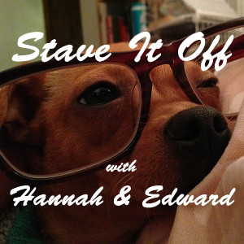

~The Albuquerque Century Begins!
Listen on Internet Archive. Listen on Google Drive.🐶
Doctor Who! O-Rings! Faux Nostalgia!
Listen on Internet Archive. Listen on Google Drive.🐶
Not unlike the McRib, Hannah & Edward are back!
Listen on Internet Archive. Listen on Google Drive.🐶
Groggiest debate on modern consumerism ever!
Listen on Internet Archive. Listen on Google Drive.🐶
Edward butthurt. A crazy dinner. Shirt snafu.
Listen on Internet Archive. Listen on Google Drive.🐶
Hannah visits Zuni. Edward is incurious. A challenge to the listeners. Also: Mike Dukakis!
Listen on Internet Archive. Listen on Google Drive.For Skattie.